Feature — Tatuaje
Nothing but white lettering on a plain brown paper band. When that unadorned cigar appeared on the American market in 2003, plenty of people tilted their heads. Yet beginning the following year it placed in Cigar Aficionado's Top 25 three years running; in time, its Halloween "monsters," released at just 666 boxes a year, came to vanish on release day; and its black ceramic jar climbed to about $1,000 (approx. ¥158,000) on the collectors' market. The brand is Tatuaje — Spanish for "tattoo."
It was created by a former bassist working in a cigar shop. And at the time, he was still a shop clerk.
The founder, Pete Johnson, was a cigar lover with tattoo sleeves on both arms. What he was after was the flavor of Cuba itself. The hands that could give that memory of his palate physical form belonged to José "Don Pepín" García, a torcedor who had defected from Cuba. The García family story we traced in Part 4, "My Father," in fact begins with this brand. Tatuaje was the first brand Pepín made at his own factory, and Johnson's promise of a first order helped push the opening of the small Miami factory El Rey de los Habanos.
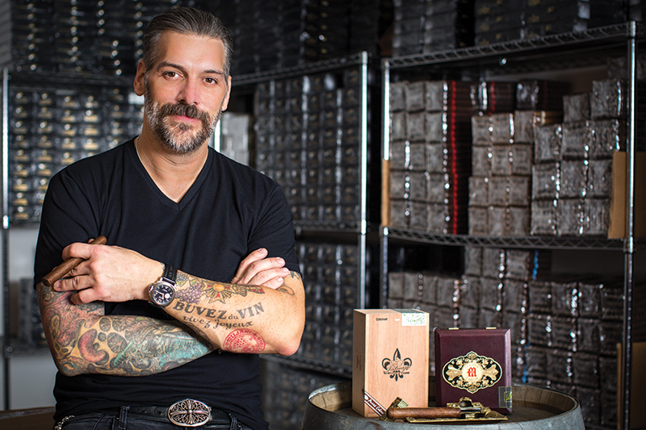
This feature starts with the man. How a young bassist who came to Los Angeles became a cigar-shop buyer, then the head of retail at a members-only club, and finally a brand owner known as "Tattoo Pete." Then the founding, the genealogy of the main lines, the Black Label that began as his personal blend, the Halloween monsters of the Monster Series, the expansion of the sister company L'Atelier Imports, and finally distribution and prices in Japan.
The facts in this feature are limited to what we could corroborate through the trade press (Halfwheel, Cigar Aficionado, Cigar Journal, Cigar Coop, Cigar Press, Tobacco Business), the brand's official site, and Johnson's own interview statements. Where his own telling shifts by period (such as how much money he brought to Los Angeles), we do not pin down a figure; where outlets conflict on numbers such as production runs, we print both. We use no anecdote we could not back up. Also: Tatuaje is not a line of My Father. Ownership sits with Johnson's Tatuaje Cigars / Havana Cellars; My Father is the manufacturing partner. Please take that division as the premise of the whole feature.
◆ Chapter 1 — The Man: Pete Johnson
The story begins not with cigars but with music. Pete Johnson is from Maine. In his younger days he was a heavy-metal / hard-rock bassist. He came to Los Angeles with friends, fell for the city, saved a few thousand dollars working at a university print shop, and moved. The amount itself shifts in his own telling — about $2,500 (a 2007 interview) versus about $3,000 (a 2025 podcast) — so here we simply write "a few thousand dollars in hand." Nor was there just one band: he played in several, including Hung Jury. Some secondary sources call him a guitarist, but every primary interview agrees: bassist.
His awakening to cigars came during the band years. He began exploring in earnest around 1991. A bandmate's father was a cigar smoker, and Johnson says he lived within that sphere of influence. After trying hundreds, his first box purchase was a Davidoff Private Stock #11, and he smoked a great many Fuente Château, by his own recollection. Above all, what seized him were Cuban cigars — and the Opus X, which he felt stood shoulder to shoulder with them. Given an Opus X by Carlito Fuente before its release, he thought it "better than any Cuban cigar," and by the time of the East Coast launch he already had an Opus X tattoo on his right arm. It was around then that people in the industry began calling him "Tattoo Pete."
In his band days, Johnson played entire shows with a cigar in his mouth, his bass slung low. "Breathing with a cigar in my mouth was the hardest part," he says with a laugh — an account that matches across both Cigar Press and Cigar Journal. In his world, music and cigars were continuous from the start.
His cigar-shop career began with Sunday part-time work at the local Gus's Smoke Shop: blending pipe tobacco, restocking the humidor, working the register. Within six months, though, he was the shop's buyer. He left in 1995 to work at The Big Easy, and eventually the stage shifted to the Beverly Hills members-only club Grand Havana Room. His position there matters, in order: first he was a customer — a member. He joined soon after it opened and says he "spent nearly everything I earned on cigars and dues." About two years later, in September 1997, when the club's retail operation opened, he started working there, handling buying and building the organization, and ultimately rose to Director of Retail for Grand Havana Enterprises.
In 1995 he made one trip to the Dominican Republic. He wanted to build his own brand. But at the height of the boom, every factory told him the same thing: "Just put your band on an existing cigar." He refused the idea of putting his name on someone else's cigar. "So I waited." That stubbornness decided the shape of the founding eight years later.
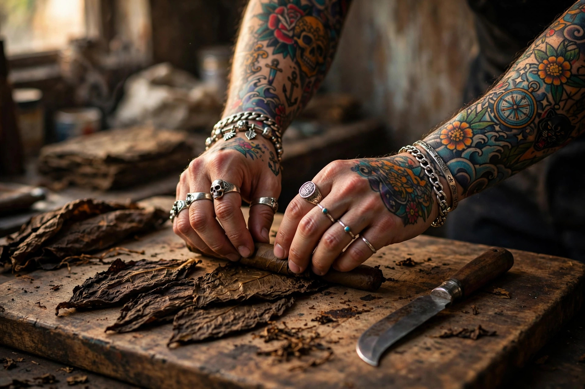
For the man himself, his own words say more than any reputation. Tobacco Business (2018) portrayed him as a perfectionist, and he put it this way: "I always made the brand for myself to enjoy. If other people enjoy it, that's a bonus." "The only thing I've taken in is criticism. I want to make the perfect cigar." In a Cigar Journal feature, meanwhile, he frankly admitted a weakness: "I've always been a little self-conscious. Being accepted matters to me. When someone dislikes a product, it can get me down." The often-repeated description of him as a "man of few words, a craftsman" could not, in our research, be confirmed from any reliable source. In actual interviews he is voluble, and laughs at himself.
His way of selling is just as consistent. "I will never be the guy who calls retailers and makes them buy. I will never say 'you have to buy this' or 'this is the world's best cigar.' If people want it, they can buy it." That aversion to the hard sell survives in his own words from early interviews. And he was also a man who learned what he couldn't do: when the brand began, lacking any knowledge of running a business, he took an entrepreneurship course at a local community college, and learned Spanish to talk with the factory, Tobacco Business reports. A peer's assessment is symbolic, too. Jon Huber of Crowned Heads said: "This man literally changed the game in 2003. Without Tatuaje there would be no Illusione and no Crowned Heads."
Wine is another great passion of his — but it was not a former career. Winemaking came after cigars: from around 2010 he had his own vintages made at VINIV in Bordeaux's Médoc (five vintages), naming them "Tatouage," French for tattoo. This "wine yardstick" leads directly to the ideas behind La Vérité and La Mission, which appear later.
Asked "what would surprise even your biggest fans?", Johnson gave two answers: that he is handy with a sewing machine, and that as a boy he worked repairing baseball gloves (Stogie Guys interview). Behind the image of the tattooed arms, a glimpse of manual dexterity.
◆ Chapter 2 — 2003, Miami: Meeting Pepín, and the Founding
In 2003 the turning point arrived. A sales rep he had long known had moved to Tropical Tobacco. "You really do want to build a brand, don't you?" Through that introduction, a torcedor fresh from Cuba, José "Don Pepín" García, came to Los Angeles. The meeting place was the Grand Havana Room. Johnson spoke no Spanish; Pepín spoke no English. The conversation, through an interpreter, is said to have lasted into the night.
The decisive scene is one Johnson has told in most detail to Cigar Press. There was a box of Cuban cigars that had been smoking perfectly; he handed one to Pepín and said, "Make me this." What came back some five minutes later was "absolutely perfect." But after a few days it had thinned out, so he phoned: "A little stronger, more depth." The next sample was, in his words, something he "could swear was a Cuban cigar." Less a master meeting a disciple than a craftsman's hands reproducing a customer's palate-memory. Cigar Journal's Pepín feature likewise describes Pepín hitting it off instantly with this tattooed young man.
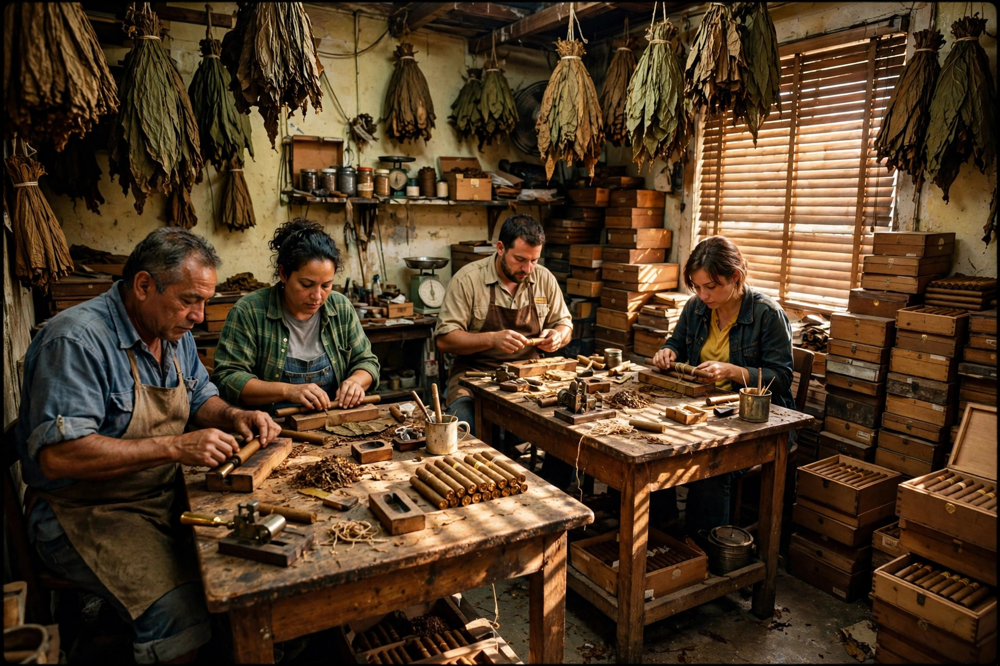
The promise to take Johnson's first order helped spur the García family to open a factory in Miami, Cigar Journal reports, citing the family's testimony. The factory was named El Rey de los Habanos. The first production, in 2003, was just 300 boxes. Accounts of where that first run was made do vary: the same magazine says "300 boxes rolled at Tropical's Miami warehouse," while most outlets treat the El Rey factory as the birthplace. This likely reflects a transitional reality — samples and the first run via Tropical, regular production at El Rey — but since we could not confirm a statement by Johnson himself drawing the distinction, this feature prints both versions and leaves it there.
The founding-era factory was all-hands family work. Pepín himself and Jaime's wife rolled; Jaime and Janny handled packing and the office; his mother sorted wrappers. At the time they were working in someone else's borrowed warehouse, Johnson recalls. And Johnson was no mere customer, either. "In the early days, I would send orders to Miami that I didn't even need. Just to give Pepín's rollers work." That line, told at the 10th anniversary, shows the relationship went beyond business from the very start.

And the relationship's self-definition, from first to last, is "family." "I don't think I'd ever make cigars at another factory. I consider them family. They give me freedom inside the factory" (Cigora interview). "Pepín is like another father to me, and Jaime like another brother. He had no clients, and I had no clients. We grew together" (Cigar Press). Cigar Journal describes a family-like partnership in which Pepín calls Johnson "my gringo son." Even after the founding, Johnson did not go independent right away: he kept the Grand Havana Room job through the first four trade shows, treating the brand as a side venture. The turning point, he recalled on a 2025 podcast, was the 2006 Las Vegas show, when crowds flooded the booth and accounts jumped from about 125 stores to 350.
◆ Chapter 3 — Name and Aesthetic: "Tatuaje" and the Brown Band
The origin of the brand name is an anecdote very much his own. Unable to settle on a name, Johnson asked an employee at the Grand Havana Room: "How do you say 'tattoo' in Spanish?" The answer: "Tatuaje." "When I heard that, I knew it was my name," he told Cigar Journal. The official site likewise defines it at the head of each line's page: "Tatuaje = Spanish for tattoo."
The founding line, Selección de Cazadores, commonly known as the Brown Label, looked like this: a plain band of white lettering on brown, a Cuban-style slide-lid box, a triple cap. Of that simplicity Johnson has said, "That's what my cigars are. Based on the old world; I like the original simplicity." In honesty, though, we should note that no standalone design declaration — nothing saying of the band itself, "I intended minimalism" — could be confirmed. What can be confirmed is his general aesthetic. Of later years, too, he has stated plainly: "I have no intention of stuffing in tobacco from seven countries to make it complicated. I make simple cigars for people who enjoy smoking them."

His way, too, is to bury private meaning in names. Selección de Cazadores translates literally as "Selection of the Hunter" — but it is in fact a dedication to his beloved dog Hunter, who died in early March 2003, and the first six vitolas' initials spell H-U-N-T-E-R (Havana Cazadores / Unicos / Noellas / Tainos / Especiales / Regios). The six vitolas of the following Havana VI likewise spell H-A-V-A-N-A with their initials — a memorial to another late dog, Havana. "If it doesn't mean something to me, it isn't worth making" is his philosophy of making things. His sales discipline is equally stubborn: the official site still proclaims a "strict allocation system to appointed authorized retailers," and states that products from unauthorized shops are not guaranteed.
Tatuaje's production history is often written as a wholesale move from Miami to Nicaragua, but that is not accurate. According to Cigar Aficionado (its 2025 My Father feature), Miami's El Rey de los Habanos relocated to Doral and survives, and still produces the Brown Label and Don Pepín García's original Blue Label. The official site also lists Selección de Cazadores as made in both the U.S. and Nicaragua. The accurate picture: the mainline Miami production continued, and from 2006 Nicaraguan production was added and expanded. Ownership is the same story: CA counts 28% of My Father's production as going to "third-party lines," with Tatuaje at the head of them. In other words, Tatuaje is among My Father's largest customers — it is not a house line.
◆ Chapter 4 — The Main Lines: A Genealogy of Brown, Red and Black
From the 2003 founding line onward, Tatuaje has grown a family of lines that can be organized by color and name. The production milestone was 2006. The García family expanded Tabacalera Cubana (TACUBA) in Estelí, and among the very first products to come out of it was the first Nicaraguan-made line, Havana VI (Red Label). The reason it was an expansion rather than a move, in his words: "The Miami factory had its limits, and labor costs are high." As a result, Havana VI became a more moderate, less expensive alternative to the Brown Label. On August 29, 2009, the My Father Cigars factory complex opened in Estelí, and the center of gravity of production tilted heavily to the Atlantic side.
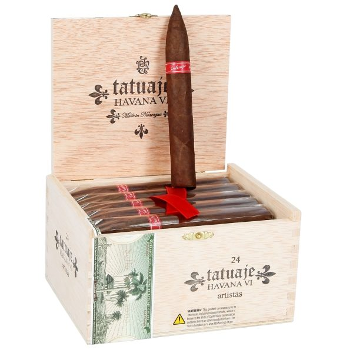
| Photo | Line | Debut | Profile |
|---|---|---|---|
| Selección de Cazadores (Brown Label) | 2003 | The founding line. Cuban-style box, brown band, triple cap. Miami production is the mainline. Offshoots include the stronger Cojonú, billed as a three-year cycle, and the Reserva with its black second band |
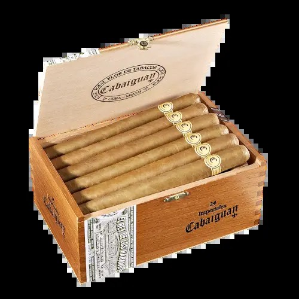 | Cabaiguan | 2006 | A mild line. Tatuaje's first Ecuadorian Connecticut shade wrapper. Named for the Cuban town of Cabaiguán. The band carries no Tatuaje name, and Johnson says it was at first mistaken for a separate brand. The Guapos offshoot is a stronger version |
| Havana VI (Red Label) | 2006 | The first Nicaraguan production. A more moderate, less expensive alternative to the Brown Label. The first six vitolas' initials spell H-A-V-A-N-A | |
 | Verocu | 2007 limited → 2015 regular | A strengthened Havana VI. With added ligero, Johnson's own phrase is "the Red Label on steroids." It began as a regional limited split between the East and West of the U.S. |
| La Riqueza | 2008 | "Wealth." A Connecticut broadleaf wrapper — said to be the first broadleaf product for both Johnson and García. Dropped from the price list in 2017; revived as an SE in 2022 |
| El Triunfador | 2008 limited → 2010 regular | "The Winner." It began as a 2008 limited lancero (today's Original). The red-banded regular line (2010) is a different blend |
| Ambos Mundos | 2009 | "Two Worlds." A value-oriented line offering two wrappers — Habano and Sumatra — over the same Nicaraguan core. Removed from the price list in 2017 |
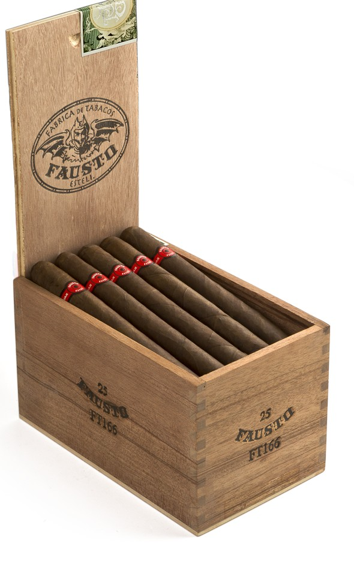 | Fausto | 2011 | The T110 (2009), a Honolulu store exclusive, made regular. Johnson himself acknowledges it as among the strongest in the portfolio. Five sizes: FT114 / FT127 / FT140 / FT153 / FT166 |
| Avion | 2011–2013 | A project issuing box-pressed perfecto versions of the Fausto blend, one size a year. Completed with '11, '12 and '13 |
| La Casita Criolla | 2011 (some say 2012) | Wrapper, binder and filler all Connecticut broadleaf — 100% broadleaf |
| Tattoo | 2014 regular | A low-price line carrying the English translation of the brand name. From the Caballero at $5 (approx. ¥790). Made at TACUBA, 50-count boxes |
| Nuevitas | Early → revived 2018 | An exceptional line: in its earliest days it was made not by the Garcías but by Tabacalera Tropical. It ended in 2007, and in 2018 was revived as a My Father-made Nicaraguan puro |
On the ratings front, too, Tatuaje stood out early. In Cigar Aficionado's Top 25, the Especiales took No. 25 in 2004 (90 points), the Tainos No. 4 in 2005 (93 points at Top 25 publication), and the Noellas No. 9 in 2006 (92 points) — three straight years in the list from immediately after launch. Later came the Havana VI Artistas at No. 25 in 2014, the Fausto FT153 at No. 14 in 2018 (93 points), and the Miami-made Havana Cazadores at No. 18 in 2023 (93 points). And in 2025, the subject of the next chapter — the Black Label — would earn the highest honors in the brand's history.
◆ Chapter 5 — The Black Label: A Private Blend and a Black Jar
The Black Label (Private Reserve) is a line born from Johnson's personal stash. He left its origin in a memoir of his own (quoted in full in Halfwheel's review): in a small island town in Cuba, an old man who arrived by bicycle every morning would take a cigar from the pocket of his faded shirt and hand it over — the memoir includes Johnson himself as the old man saw him: "jeans, a T-shirt, a lot of silver jewelry, tattooed arms." That was a private blend, the kind factory workers roll for themselves. This line is the attempt, with the García family, to recreate that flavor in Nicaragua. It closes with these words:
“Sometimes a cigar is just a cigar. This is a tribute to that cigar.”
As a product, too, it was unusual. A Nicaraguan puro whose Estelí sun-grown Criollo wrapper was deliberately rough in appearance, like a worker's private cigar — "it didn't need to be perfect," in his words. It carried Tatuaje's first nipple cap (fuma cap) and covered foot, and the first release was a single size, the Corona Gorda (5 5/8 × 46). In November 2007, 24-count bundles went first to select retailers; in the second quarter of 2008 came 1,000 black ceramic jars of 19. The price was $12 a cigar (approx. ¥1,900), $228 for the jar (approx. ¥36,000). The base of the jar reads "Pete Johnson's Private Reserve"; there is a foil wet pack with a yellow ribbon, and a silver fleur-de-lis motif. The original factory was Tabacalera Cubana.
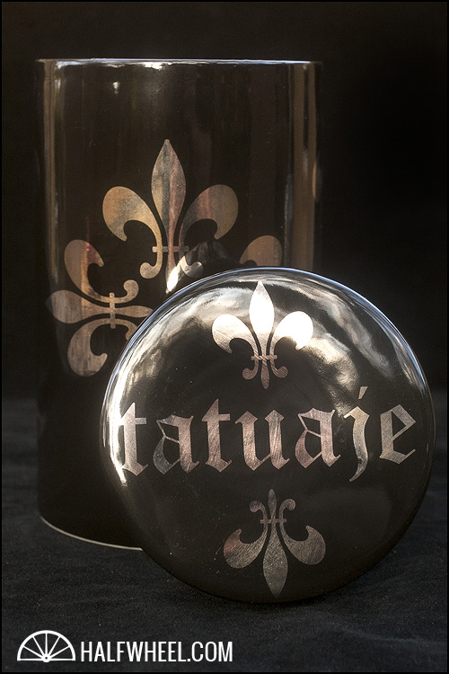
In the 2013 edition (shipped February 2014) the jar became melamine, and 500 bundles plus 10,000 jars — 199,500 cigars in all — were made at the My Father Cigars factory. Regular production advanced in parallel. In 2011 the Petite Lancero appeared, first as one store's limited run of 200 boxes, then went national as a regular in July of the same year. In June 2016 several more sizes joined the regular lineup in 20-count boxes (the blend unchanged). And in 2025, that Black Label Petite Lancero took No. 3 in Cigar Aficionado's Top 25, with 96 points — what the magazine itself called the highest rank and score in the brand's history, reached by a blend that began as a private stash.
◆ Chapter 6 — Monsters and the Culture of Limited Editions: 666 Boxes Every Halloween
Tatuaje's other face is a culture of limited editions. Its summit is the Monster Series. From 2008 to 2019, timed to Halloween each October, the monsters of classic horror films became cigars, one work a year. The basic format: a coffin-shaped dress box of 13, $13 a cigar (approx. ¥2,050), and 666 boxes. Within those 666, there was also the "Unlucky 13" mechanism, under which 13 chosen stores received 31 boxes each — the store names revealed in advance to members of the brand's membership community, Saints & Sinners.
Johnson told the idea's origin in a Cigar Press interview. A friend at Boston's Gloucester Street Cigars showed him Frankenstein-patterned Nike sneakers and said, "You should do monsters." The thinking of sneaker-collector culture was transplanted, as-is, into cigars. What's more, by his account, when he made the first entry, The Frank, he had already decided to close with The Bride, and the lineup was nearly fixed within the first week. Not opportunistic limited-edition marketing, but an eleven-year long-term design.
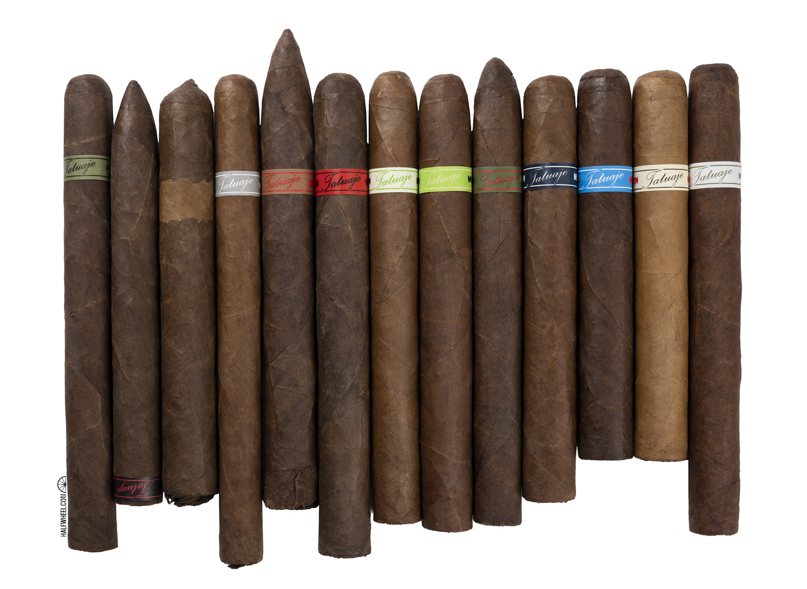
| Photo | Year | Work | Production | Notes |
|---|---|---|---|---|
| 2008 | The Frank | 666 boxes | Frankenstein's monster. The origin of the series |
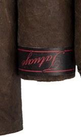 | 2009 | The Drac | 1,300 boxes | Dracula. The exceptional year when production was increased |
| 2010 | The Face | 666 boxes | Leatherface is the motif |
| 2011 | The Wolfman | 666 boxes | The Wolf Man |
| 2012 | The Mummy | 666 boxes | The Mummy |
| 2013 | The JV13 "Jason" | 666 boxes | Jason of "Friday the 13th" |
| 2014 | The Jekyll | 666 boxes | Dr. Jekyll. Place its box beside the next year's Hyde and they form a single picture |
| 2015 | The Hyde | 666 boxes | Mr. Hyde. A design paired with the Jekyll |
| 2016 | The Krueger | 666 boxes | Freddy Krueger is the motif |
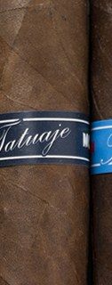 | 2017 | The Michael | 666 boxes | Michael Myers is the motif |
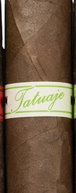 | 2018 | The Bride | 666 boxes | The Bride of Frankenstein. Announced as the "final work," the 13th in total |
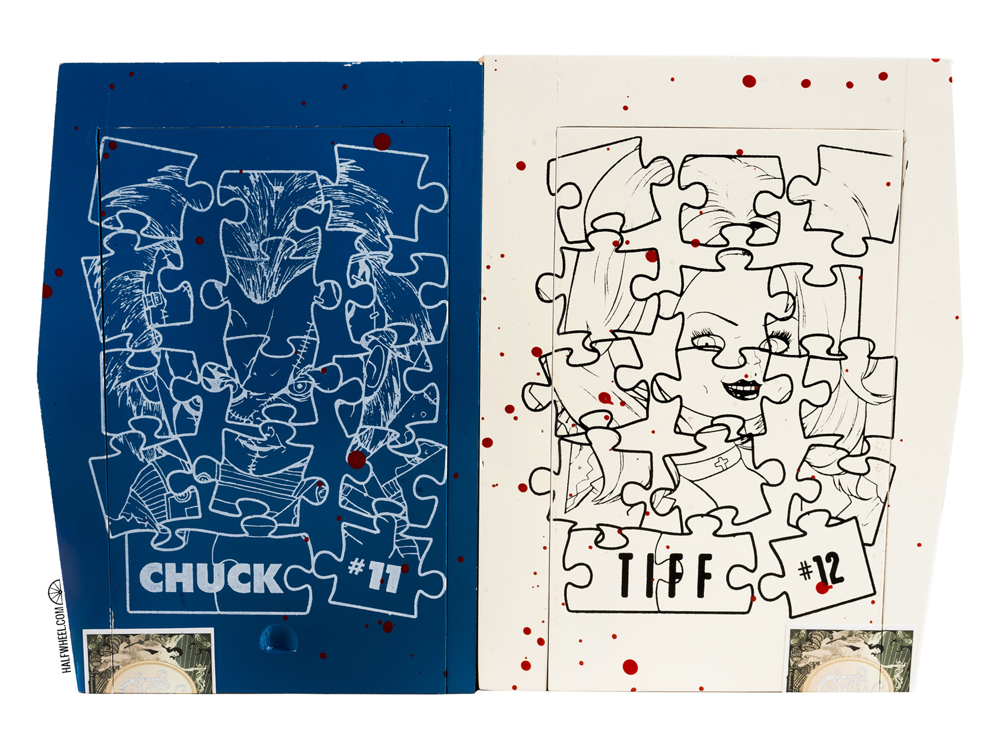 | 2019 | The Chuck / The Tiff | 700 boxes | The pair from "Child's Play." Retroactively positioned as the 11th and 12th works, going to 26 stores as the "Unlucky 26." Join the two coffin boxes and they form a single picture |
The monsters also multiplied in altered forms. The small sampler Little Monsters (2012, 10,000 sets), Pudgy Monsters (2014), where Chuck and Tiff first appeared, the slim Skinny Monsters (2016; some later became regulars), and Monster Mash (2021, 13,000 sets, $150 = approx. ¥23,700) and Monster Smash (2024, 13,000 sets, $175 = approx. ¥27,700), where the new monster Creature debuted. Even after the main series concluded, the "Redux" reissue series continued — Frank (2021, 5,000 boxes), Drac (2022, 4,000 boxes), Face (2023), Wolfman (2024), Mummy (2025) — and in June 2026 the Creature reached a standalone full-size release.
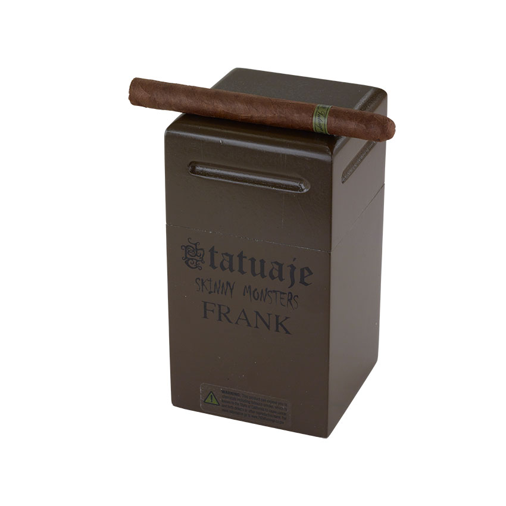
■ The Culture of Store Exclusives — Anarchy and the Butcher-Paper Legend
Alongside the monsters, the other pillar is the store-by-store exclusive. The standard-bearer is Smoke Inn's Anarchy. Made at the request of owner Abe Dababneh as the first entry in the "MicroBlend" series marking the store's 15th anniversary, it was released on December 10, 2010. Its spiral pigtail is called the "cinnamon bun"; with an anarchy-symbol band and a black box, it sold at $9.99 (approx. ¥1,580). Production figures conflict by outlet — one theory says 1,000 boxes, another 1,500 plus 1,500 for 3,000 in total — and we will not settle it here. After the sequel Apocalypse (2012, 1,300 boxes), it was reissued in 2015 at just 666 boxes. Then in 2023, this Anarchy was auctioned as an NFT: of seven packages, #1 reached $100,000 (approx. ¥15.8 million), and the six that sold totaled $503,461 (approx. ¥79.5 million). An event in which cigar limited-edition culture connected to the digital-asset age.
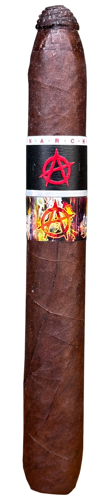
AI-generated image (no photo available)Another legend is the Pork Tenderloin (2010). An exclusive for Gloucester Street Cigars, just 200 bundles of 25 were sold wrapped in butcher paper at $8 (approx. ¥1,260). A 95-point score from the review site Smoking Stogie made it legend, and in May 2025 it was reissued with the original blend, at 5,000 bundles. Together with the previous year's Pork Chop (2009, 100 boxes), the centennial of New York's venerable Barclay Rex (2010, the first of the Exclusive Series), and Federal Cigar's 90th anniversary (2011), Tatuaje's store exclusives cultivated the very culture of "one cigar only for that store, for that store's milestone."
◆ Chapter 7 — Expansion: L'Atelier, Surrogates, and the "Reversal"
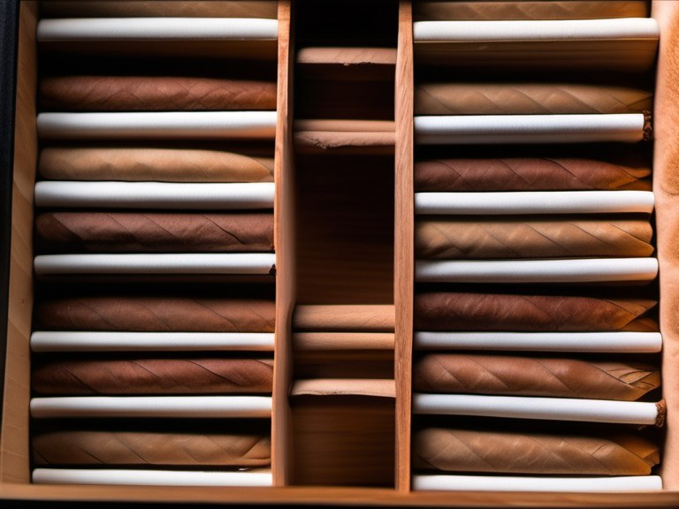
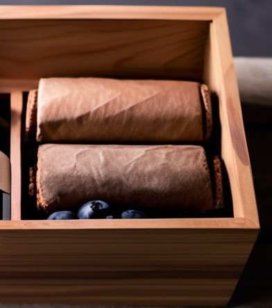 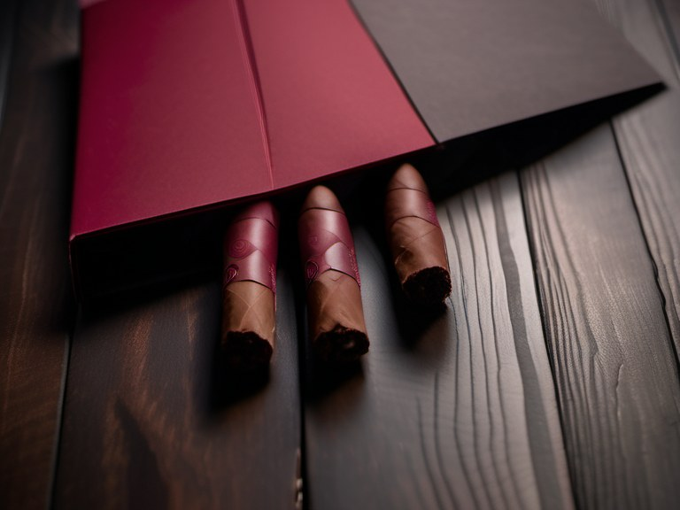
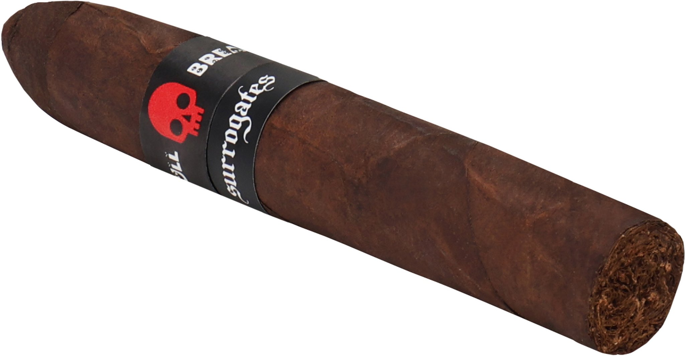
Surrogates is an oddity from its very origin. It began at the end of summer 2011 as an exclusive for Dan Welsh's own shop, New Havana Cigars, with only two cigars, the Bone Crusher and the Skull Breaker. In 2012 it moved under L'Atelier and into national distribution. Around this line, the trade press's well-known reading is that it is an homage / parody of famous other brands — and for accuracy's sake we write the levels distinctly. The correspondences (Tramp Stamp = Tatuaje; Crystal Baller = Illusione's Epernay; Satin Glove = Padrón, and so on) are at the level of trade-press suggestion, not official announcement. And for the first two cigars, Welsh himself has stated plainly: "They are not clones. The names are wordplay." The tension itself — the observers' interpretation versus the man's denial — is what makes this line interesting.
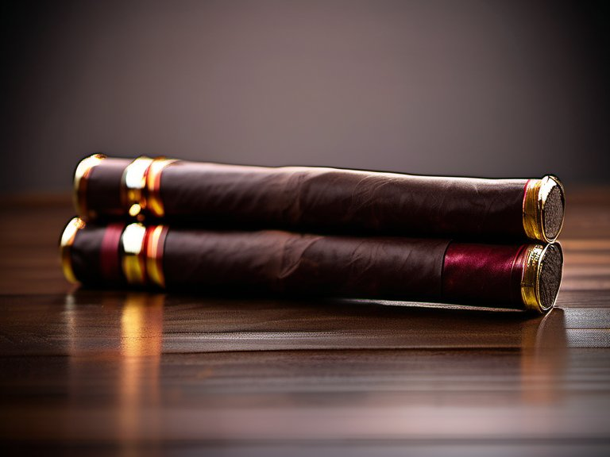

The relationship's summit is 2024's La Union. Marking 20 years of collaboration, it is a two-part composition in which the two companies blend "for each other": a humidor-style box of 40 — 20 of each blend — with a cutter, at $2,400 (approx. ¥379,000), limited to 1,500 boxes per color. Not a merger, not an acquisition — a "joint project" in the 20th year. Their relationship, here too, remains family while the company structures remain separate. As a recent move, in May 2024 a second distribution center opened in Doral, Florida, giving a two-base system: the East shipped from the Miami area, the West from the Los Angeles warehouse.
◆ Chapter 8 — Buying in Japan: What Tatuaje Costs Here
Finally, the Japanese connection. In this magazine's Japan cigar database (2,487 entries, cross-checking the Ministry of Finance approval lists against domestic store sales), 28 items are recorded under the brand "Tatuaje." All 28 are "confirmed currently on sale," and the manufacturer is recorded in every case as My Father Cigars S.A. The main stores where sales could be confirmed are Okoshi Saketen, Hamakidonya, and AUN Smoke. Contrary to the impression of an American boutique brand, it can be bought in Japan in surprising plenty — that is the picture the numbers show.
Of those, nine items were confirmed on both sides: Ministry of Finance approval (a set retail list price) and store sales. Store prices match the approved list prices. The Black Label Petite Lancero, which in 2025 took No. 3 and 96 points in Cigar Aficionado, can be bought in Japan, ordinarily, for ¥1,900 (approx. $12). That fact may be the biggest surprise of this feature's Japan section.
| Photo | Item | Approved list price | Confirmed sold at | Notes |
|---|---|---|---|---|
| Serie P Honduras Robusto | ¥1,300 (approx. $8) | Okoshi Saketen / Hamakidonya | Approved 2026-03-02. The most affordable entry in the current lineup |
| Black Petite Lancero | ¥1,900 (approx. $12) | Okoshi Saketen / Hamakidonya | Approved 2025-10-20. The very cigar that took No. 3 with 96 points in CA's Top 25 of 2025 |
| L'Atelier LAT52 | ¥2,100 (approx. $13) | Hamakidonya | Approved 2024-01-31. The eldest of Chapter 7's LAT series |
| L'Atelier La Mission 1959 | ¥2,100 (approx. $13) | Okoshi Saketen / Hamakidonya | Approved 2024-01-31. The homage to the Bordeaux château |
| 10th Anniversary Belle Encre Perfecto | ¥2,100 (approx. $13) | Okoshi Saketen | Approved 2025-10-20. The 10th-anniversary size from 2013 |
| Cabaiguan Guapo No.52 | ¥2,100 (approx. $13) | Okoshi Saketen / Hamakidonya | Approved 2026-03-02. A Guapos, the strengthened Cabaiguan |
| Mexican Experiment ME II Belicoso | ¥2,300 (approx. $15) | Okoshi Saketen / Hamakidonya | Approved 2024-01-31. The San Andrés wrapper experiment |
| El Triunfador Lancero Original | ¥2,500 (approx. $16) | Okoshi Saketen / Hamakidonya | Approved 2025-10-20. The 2008 original-blend lancero can be bought in Japan, too |
| Cojonú 2006 | ¥2,900 (approx. $18) | Okoshi Saketen / Hamakidonya | Approved 2023-06-23. The stronger series on a three-year cycle |
The sale-confirmed-only items (original-document cross-check of approval pending) have a full lineup, too. From the founding line, the Noellas at ¥2,000 (approx. $13), where three stores — Okoshi Saketen, Hamakidonya and AUN Smoke — agree. The Black Corona Gorda at ¥2,200 (approx. $14), the Fausto FT127 at ¥2,100 (approx. $13), the Havana VI Angeles at ¥1,600 (approx. $10), the Gran Cojonú at ¥3,600 (approx. $23), and the well-suited-to-beginners Petite Cazadores at ¥1,000 (approx. $6), among others. Chapter 7's La Union (two blends) advanced to domestic approval on March 30, 2026 at ¥15,000 (approx. $95) a cigar, but domestic sales have not yet been confirmed (approval only).
Japan's official (exclusive) importer has not been publicly announced by Tatuaje or by any trade magazine, and in this magazine's database the importer field reads "unknown" for every item. Some domestic store listings carry the notation "imported by Hamakidonya" on items circulating at Okoshi Saketen and elsewhere, but that is the seller's own listing notation — please receive it as something separate from an official announcement. The existence of (Ministry of Finance) approval and the publication of an importer are different matters.
◆ Conclusion — The Factory He Calls Family
Let us close the twenty-two years we have traced, line by line. A young bassist became a cigar-shop buyer, refused the shortcut of putting his own band on other people's cigars and waited, and met the one torcedor who could reproduce the flavor of Cuba. The first order was 300 boxes. The factory was twelve people, all family. In time production spread to the great factory in Estelí, the monsters came to appear at just 666 boxes every Halloween, and a private blend took 96 points. Even so, he has not changed factories. "I consider them family." That one line sits at the center of the blueprint of the brand called Tatuaje.
Tatuaje is not a part of My Father. The García family story we traced in Part 4 and this feature are the same factory seen from its two sides. Command of the blends and ownership of the brand are Johnson's; the hands of manufacture are the Garcías'. On that tension and that trust stands the single cigar with the brown band. In Japan, too, that cigar can be bought from ¥1,000 (approx. $6). Start with the Petite Cazadores, or the Black Petite Lancero. Take the tattooed man's twenty-two years, and test them in the smoke.